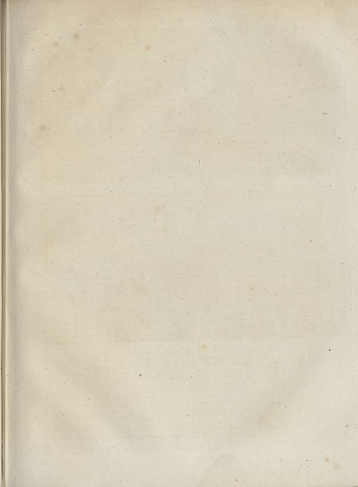

Source · scan and Parse blocks
Layers 1

Parse text by block reading order
- 0Picture
Provenance page_id, checksum, Parse model
- page_id
- britannica:309f765b1ecc83e0a7f7762e44b4a927a7555443:train:374
- sha256
- 2b13c7e2a0e0431e45b77999eb1745e0fe718efc79eb85c6af22a599f7c18382
- Parse
- nvidia/nemotron-3.5-parse · finish stop